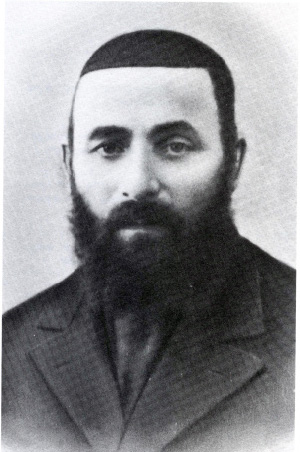

The Chassid Who Gave His Life for His Shlichus
About the Chassid, R’ Avrohom Levik Slavin, a Chassidishe rav and shliach of the Rebbe Rashab to Kulashi and Kutais in Georgia. He was moser nefesh to spread Judaism among Georgian Jews until he was arrested and sent to a labor camp, his whereabouts unknown. He did not merit Jewish burial but his yahrtzait was established by the Rebbe Rayatz. This article is based on the book “Arba’ah Chassidim” by Shneur Berger.

R’ Avrohom Levi Slavin was born in Rogatchov in White Russia in 5651/1891. His parents were Yisroel Nosson, a Chassid of the Rebbe Maharash, and Gittel. Contagious diseases raged through Russia at the time and they became sick and died within a week of one another. Avrohom Levi became a double orphan at the age of eight. Having no close relative to care for him, he was adopted by the community who took care of him. When he grew older, the heads of the community sent him to learn in the yeshiva in Bobruisk.
He learned there until he was 14. Then he went to Lubavitch and was accepted into Tomchei T’mimim. At this young age he was already considered an ilui for he knew some tractates by heart with the commentaries and was proficient in Shulchan Aruch. When he was tested, he was discovered to be a tremendous scholar, knowledgeable beyond his years. They decided to send him to the zal so he could study for smicha for rabbanus.
He spent several years studying and when he was finished, he was tested and was given ordination for rabbanus by famous rabbanim including the Rogatchover Gaon.
His scholarly reputation was known and the community in Bobruisk suggested he return to them so he could serve as the rav in one of the big shuls. He agreed and the young bachur was appointed as rav of a shul.
After he married the daughter of R’ Avrohom Dovid HaKohen at the age of 22, he and his wife Rochel Malka moved to Seduva in Lithuania, where his in-laws lived. His father-in-law had a small grocery store and when his son-in-law came to town, he gave the store over to him. R’ Avrohom Levik had his wife run the store while he sat and learned.
SHLICHUS TO GEORGIA
In 5677/1917 the Rebbe Rashab asked him to go to Georgia. R’ Shmuel Levitin operated in Kutais, Georgia during those years and since the work had grown, he needed help.
It wasn’t easy to travel to distant Georgia in those days, as it was during the communist revolution, but his Rebbe’s directive outweighed all other considerations and without thinking much about it he packed their few belongings and left for Georgia with his wife and little children. His children were quite young when he set out. The oldest was five and the next one was three, and his wife held the year old baby.
The exhausting trip took months. There were times that they had to drag their feet in the glacial cold, in rain and snow, until they were able to obtain a wagon. If traveling in wagons wasn’t hard enough, the trips by train that lasted for days without stop were much harder. The little children, hungry and thirsty, did not stop crying. They could not understand that money wasn’t always available and that there was nothing to still their hunger.
Around them swarmed gentiles, including murderous anti-Semites. The family was constantly fearful. What was the gentile who sat next to them thinking? Was he plotting against them?
The long trip finally reached an end. R’ Avrohom Levik and his family reached Kulashi where 3000 Jewish families lived.
BUILDING TORAH
R’ Avrohom Levik realized that he would not be making a living from the members of the community. So he went to the nearby town of Samtredia and introduced himself as the rav of the neighboring town and asked the manager of the factory whether he could give him a barrel of oil on credit which he would sell little by little. After he sold it all, he would pay what he owed and get another barrel. The manager agreed and gave him what he wanted. His wife sold the oil, drop by drop, and R’ Avrohom Levik got down to the work of shlichus which the Rebbe had assigned him.
With great mesirus nefesh he established schools, chadarim for the boys and yeshivos for bachurim. He did not spend much time at home. He went from city to city, from town to town, and village to village, in order to start schools and shiurim for adults. In Kulashi, he started a yeshiva and a big elementary school where hundreds of students learned Torah.
Among the places R’ Slavin started schools was the town of Oni. Georgia is mountainous and has many rivers and lakes. This is why there wasn’t good transportation, especially between towns and villages. The mountain passes were narrow and winding and transportation was mainly by carriages and wagons hitched to horses.
Oni was on a high mountain and many Jews lived there. The trip generally took three days. Like the other towns and villages, transportation to this place was through a narrow path. The path was so narrow that if two wagons met, facing one another, they were both in great danger.
One year there was a particularly hard winter and the road to Oni was covered with high piles of snow. There was barely any transportation there. Since this was the case, R’ Avrohom Levik did not know what to do about the schools he had started there.
In the middle of the winter, a messenger arrived at the Slavin home who said that he had come from Oni after a very difficult journey. Due to the terrible weather, it was impossible to leave the town. Business was paralyzed and the Jews had no way of supporting themselves. Under these circumstances, they were unable to pay the teachers and it was impossible to bring money from the city. The situation had deteriorated to the point that the schools barely operated.
When R’ Slavin heard this, he decided to put his life in danger and travel there in order to prevent the closing of the schools. He hired a gentile with a strong horse and made his way to Oni. The gentile walked in front of the horse because there wasn’t room for two men on the horse.
The snow and rain fell constantly and the freezing cold penetrated their bones. Their thick clothing was not enough to keep out the cold. After three days of traveling he arrived at the town exhausted from the rigors of the trip. Before he rested and recovered, he found out that the messenger had given an accurate picture of the situation. The children wandered around with nothing to do because the teachers had not received their salaries. All the work he had invested in the local schools was about to go to waste.
R’ Levik immediately called a meeting of the leaders of the community. He spent hours explaining to them the importance of children studying Torah and the holy obligation they had to make sure that Torah study did not cease. In the end, it was decided that they would commit to covering 50% of the expenses and he would take care of the rest.
After a few days he decided to go home. He had so much work to do, holy work, in other places. On his way back to Kulashi he underwent all the same travails as he had on his way to Oni. The snow and rain became increasingly treacherous and the danger of slipping from the narrow path worried him. As he traveled, while he sat on the horse with his feet tied to the saddle to prevent falling, the horse slipped in the snow. The horse rolled about in the heavy snow along with R’ Avrohom Levik, who was unable to move. His feet were tied to the saddle and he hung there …
After a while the horse managed to get up on its feet while R’ Avrohom Levik, because his feet were tied to the horse, was dragged behind! The gentile, who was walking way in front of them in order to see that the path was clear of potholes and other dangers, did not see the horse slip and rider fall and he continued walking, oblivious to what was happening dozens of meters behind him.
R’ Avrohom began shouting with his remaining strength so that the wagon driver would come to his rescue, but his voice was lost in the vast snow plains. After some time the wagon driver stopped and looked behind him. To his dismay he did not see the horse and rider, and so he rushed back to see what happened. He was surprised to see the horse making its way through the snow while the rider was dragging behind and shouting.
The wagon driver quickly picked him up and cleaned him off. After recovering a bit from his injuries, the wagon driver placed him on the horse and continued walking. R’ Avrohom Levik groaned from the injuries he sustained while he was dragged by the horse. He arrived home in terrible pain. He spent two weeks in bed without being able to move until he slowly recovered his strength and was healed of his wounds.
THE BURNING
OF THE SHULS
In 5685/1925, the secret police sought to arrest R’ Shmuel Levitin and close the yeshiva he started in Kutais. The Jews of Kutais, who knew what was happening behind the scenes, told him that the authorities were planning to arrest him. He appointed R’ Avrohom Levik to take his place and fled to the Rebbe Rayatz in Leningrad. R’ Avrohom Levik and his family moved to Kutais where he was very successful as the Chabad rav and rosh yeshiva.
Hundreds of talmidim who began learning under R’ Levitin, continued learning with R’ Avrohom Levik, and he took care of all their material and spiritual needs.
On his trips throughout Georgia, R’ Avrohom Levik examined the mikvaos in the cities and towns where Jews lived and where necessary, he renovated them and even opened new ones.
He made a list of the status of the mikvaos in Georgia and in the margins he wrote what improvements were needed in some mikvaos and where there wasn’t a mikva altogether. He sent the list to the Rebbe Rayatz.
At the end of the winter 5691, the decision was made to move the Yeshivos Tomchei T’mimim to cities in Georgia and the Caucasus where the communists were not as heavy handed as they were in the rest of the Soviet Union.
In the summer of 1931, a group of bachurim went to learn in Kutais and R’ Avrohom Levik helped them in every way. A few months later, another group of bachurim went to learn in Kutais and the yeshiva grew. The yeshiva was there for about two years and R’ Avrohom Levik was there to help and support the bachurim who were far from home. Sadly, the yeshiva was closed because of the attempt to smuggle across the border which ended in the arrest of a number of the talmidim.
WHEREABOUTS UNKNOWN
There was a certain party member in Kutais, who, as a result of a certain incident, felt that R’ Avrohom Levik had offended her personally. This woman went to the NKVD office and informed on him. The NKVD were thrilled with the formal complaint. They were familiar with his activities, with his founding Jewish schools for children in various cities of Georgia, building mikvaos, etc. all against the law which forbade religious activities such as these. It was just that in Georgia it was hard for them to persecute rabbis because of religious activity. Now they had an opportunity to take revenge on him and put an end to his work.
It was a night in Kislev 5701 at two o’clock when banging was heard at the Slavins’ door. Their hearts beat rapidly as they immediately pictured who it was knocking at the door at that hour. When they opened the door, they saw four NKVD agents. The agents did not wait for an invitation but barged right in. One stood near the door on the inside, so nobody could escape, while the leader of the group took out a search warrant, signed by the NKVD commander in Kulashi.
The three angels of destruction began searching and probing in the bookcase and drawers, kitchen cabinets, desk drawers and every corner of the house. They paid particular attention to the desk drawers and bookcase which turned out to be a bonanza for they found copies of letters that R’ Avrohom wrote to the Rebbe Rashab and the Rebbe Rayatz as well as letters in the Rebbeim’s holy handwriting. They had discovered a genuine “Schneersohnski,” a member of a counter-revolutionary organization, the most dangerous in Russia, and documents signed by the head of the organization himself, Rabbi Schneersohn!
But they did not suffice with that. They turned over and broke everything in the house, shaking out and throwing bedclothes to the floor, leaving nothing untouched. After confiscating what they wanted to take and packing them up, they ordered R’ Avrohom Levik to get dressed and accompany them. His wife and children, who knew what this meant, began to plead for his life and their lives, that they do him and them no harm and not take him from them. Their pleas were ignored and they were even threatened that they would be taken along if they did not stop crying.
The next day, his wife went to NKVD headquarters and asked where her husband was, but their answer was he was not to be found there. They weren’t lying. After that woman tattled on him, she was sure that the NKVD would go immediately and arrest him. However, when one week and two weeks went by and he was not arrested, she went to NKVD headquarters in Tbilisi and tattled again. She knew that in his city of Kutais, even if he would be arrested, they would release him shortly because of the close ties that Chacham Michoel Davitiashvili had with the NKVD. So she asked the NKVD headquarters in Tbilisi to transfer him there because the Chacham had no connections there.
That is what happened. The NKVD in Kutais were told to transfer R’ Avrohom Levik to Tbilisi until he would be sentenced by headquarters in Moscow.
R’ Avrohom Levik spent eighteen months in the cellars of the NKVD in Tbilisi in a cell with thieves and murderers. Every few days they would get him up late at night and take him to the interrogation room on the fourth floor.
During the initial interrogations, he was told that the informing was just an excuse to arrest him. The interrogators read to him what was written in his file: the number of schools and yeshivos he had founded including their addresses; in city X he had founded a yeshiva and in another city he had made a mikva; the exact names of the teachers; the names of the roshei yeshiva and mashgichim. They told him everything. “We are not in a rush. Nobody can escape us. We know everything!”
The interrogations, accompanied by torture, were debilitating. He bled from their blows but he did not give them a single name of those who helped him or those who worked as teachers and the like. All their efforts to get him to confess were in vain.
At the end of a year and a half in jail, they transferred his file to Moscow for him to be sentenced. His sentence was severe: ten years of exile and hard labor in a Siberian labor camp.
After the family found out about his sentence, they asked to meet with him before he would be sent away. Although many friends tried to dissuade the family not to endanger themselves, his son, R’ Yisroel continued to make efforts and permission was granted to meet with his father.
R’ Yisroel described that painful meeting:
“When I saw him through the bars of the door, after a separation of a year and a half, I hardly recognized him. His face was swollen and his face was completely pale. His body was shrunken and exhausted. His condition so affected me that I nearly fainted. My father showed me his shirt stained with blood that was stuck to his skin from all the blood that had run onto it from the beatings and tortures he sustained. He tried to separate the shirt material from his skin but was unable to do so.
“‘I am very doubtful as to whether I will have a Jewish burial,’ were his final words to me, knowing what they accused him of and where they planned to send him.
“After a few minutes, they removed me from the area and did not allow me to continue speaking to him. It was a final parting from my father.
“After he was sent to Siberia, we had no information about him. According to the law, he was allowed to send a letter home once a year and we could do the same to him. We only received a letter one time. When we sent him a letter, it came back to us with a note attached that the addressee was hospitalized due to sickness. We knew that in that camp there was no hospitalization.
“We considered this note as a sign that our father had died. His whereabouts were unknown. I sent a letter to the Rebbe Rayatz in which I briefly described everything he went through. I ended my letter with a question, that since we did not know the date of his passing, we did not know what to do as far as mourning, saying Kaddish and observing the yahrtzait.
“The Rebbe’s answer was that since his father, the Rebbe Rashab, was the one who sent my father to Georgia, and since the day the Rebbe Rashab passed away was Beis Nissan, we should observe my father’s yahrtzait on Beis Nissan.”
Beis Moshiach (staff). "The Chassid Who Gave His Life for His Shlichus." Beis Moshiach, no. 922 (April 2, 2014).